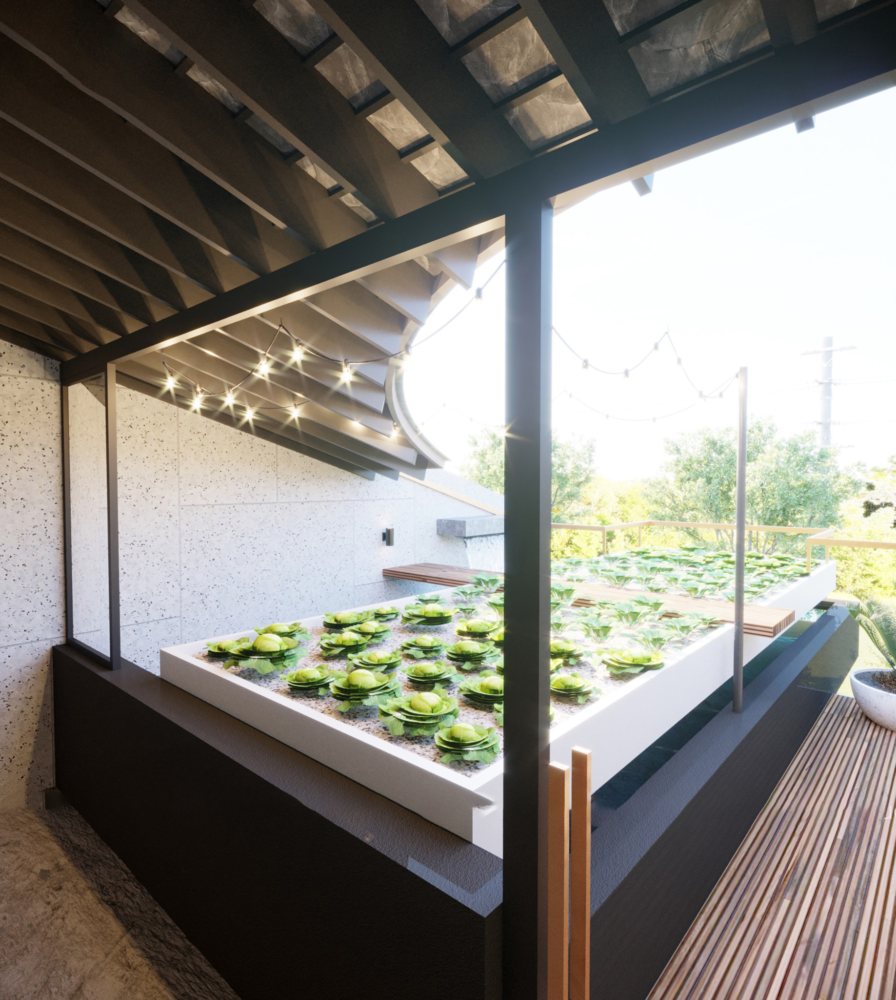
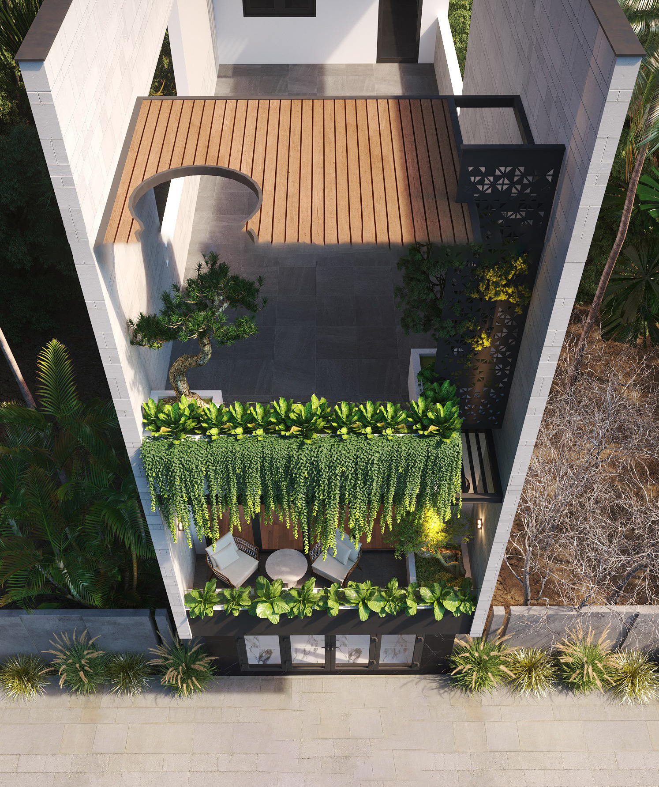
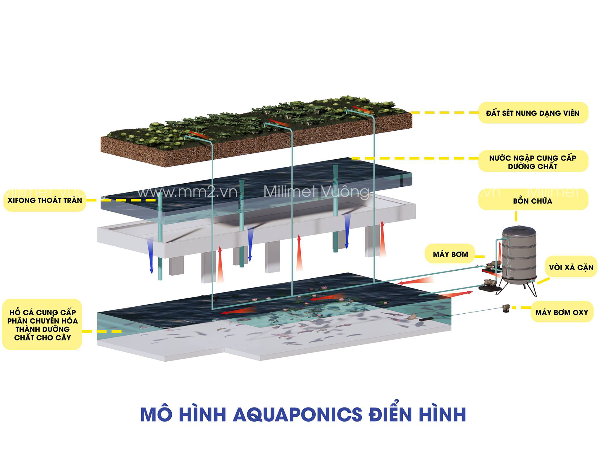
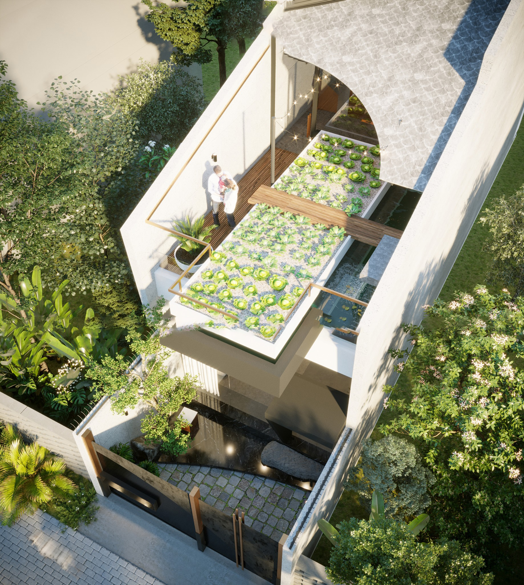

Xây dựng hệ thống Aquaponics trong nhà ở, đang là một mô hình khá phổ biến hiện nay. Vậy hệ thống Aquaponics là gì? Có những đặc điểm, cách bố trí như thế nào và mang đến lợi ích gì cho không gian sống? Hãy cùng Bầu Trời Xanh tìm hiểu qua bài viết dưới đây nhé!
1/ Hệ thống Aquaponics là gì?
Trong những năm gần đây nhà phố 2,5 tầng được rất nhiều khách hàng lựa chọn, một phần là vì diện tích sử dụng một cách hợp lý với nhu cầu, còn một phần vì chi phí phù hợp với nhiều người. Do đó, hiện nay phần sân thượng không đơn thuần chỉ để trồng cây cảnh, trồng rau sạch… mà nhiều gia đình còn tận dụng sân thượng một cách thông minh hơn, đó là làm hẳn một hệ thống Aquaponics (hình thức kết hợp nuôi cá và trồng rau).

Nói đơn giản thì Aquaponics chính là một phương pháp kết hợp nuôi cá và trồng rau trong cùng một hệ thống tuần hoàn các chất dinh dưỡng, cung cấp cho cả cây trồng và thuỷ sản phát triển. Phương pháp này đang dần được biết đến như một phương pháp trồng trọt bền vững và quy trình xây dựng cũng không quá phức tạp. Bên cạnh đó, việc tận dụng mô hình này càng góp phần mang đến nhiều lợi ích và khá thuận tiện cho gia chủ.
2/ Hệ thống Aquaponics hoạt động và được bố trí như thế nào?
Aquaponics tích hợp nuôi trồng thủy sản và trồng cây thủy canh vào chung một hệ thống sản xuất. Có nghĩa là dựa vào thức ăn được đưa vào để nuôi cá, hoạt động như đầu vào của hệ thống. Sau khi cá ăn và bắt đầu quá trình đào thải biến đổi thành phân của cá, và phần chất thải này sẽ làm phân bón cho cây trồng phát triển.

Hệ thống Aquaponics tại nhà sẽ được bố trí như sau:
Đa số hiện nay, các gia đình sẽ tận dụng sân thượng là nơi bố trí hệ thống Aquaponics, kết hợp được đủ đầy các yếu tố, ánh sáng, nước, không khí,... Và bao gồm các dụng cụ sau:
- Bể nuôi cá
- Bộ khay nhựa để trồng rau
- Máy bơm nước
- Máy sục oxy cho bể cá
- Giá thể viên đất nung/hoặc sỏi/đá bọt,...
- Bộ lọc cơ học để loại bỏ chất rắn
- Bút đo pH
- Vật tư thi công lắp ráp, sắt, ống nhựa

Một điều cũng cần lưu ý trong mô hình Aquaponics, đó là việc lựa chọn các loài cá cũng như giống cây trồng để đảm bảo thích hợp với mô hình, có sự phát triển lý tưởng nhất. Ví dụ, về cá nên chọn những loại cá khỏe, có sức chịu đựng cao, chẳng hạn như cá vàng, cá rô phi…
Còn về cây trồng thích hợp thường là những cây rau ăn phổ biến như xà lách, cải bó xôi, hoặc các loại rau thơm, ngoài ra chúng ta có thể trồng các loại cây dây leo như dưa leo, bầu, bí… Về giống cây leo, thì ban đầu có thể gieo hạt theo từng cụm hoặc cũng có thể rải rác để cho cây tự bám vào các giá thể. Hoặc một cách nữa là có thể ươm cây bên ngoài, khi cây lớn thì đưa cây vào giá thể trồng.
3/ Lợi ích mà hệ thống Aquaponics mang đến là gì?
Một số lợi ích mà hệ thống Aquaponics đem đến đó là:
- Thu được 2 sản phẩm cá và rau chỉ từ một nguồn dinh dưỡng,
- Cá và rau đều tươi, sạch và không chứa chất kháng sinh gây hại,
- Không cần đất để trồng cây,
- Tiết kiệm nước hơn so với mô hình truyền thống,
- Không sử dụng phân bón hoặc thuốc trừ sâu hóa học,
- Tạo ra ít chất thải.
- Nếu là hộ gia đình, có thể tận dụng các không gian như ban công, sân thượng, sân vườn,…
- Góp phần tạo không gian xanh mát, thư giãn cho mỗi gia đình,
- Tiết kiệm thời gian và công sức,
- Một điểm nữa, đó là vật liệu dễ tìm và quy trình nuôi trồng cũng không quá phức tạp.

Trên đây là một số đặc điểm của hệ thống Aquaponics mà bạn đọc có thể tham khảo để sử dụng mô hình kết hợp khi thiết kế và xây dựng nhà ở. Nếu các bạn còn bất kỳ điều gì thắc mắc thì hãy liên hệ ngay với Bầu Trời Xanh để được giải đáp và hỗ trợ mọi thông tin một cách nhanh nhất nhé!